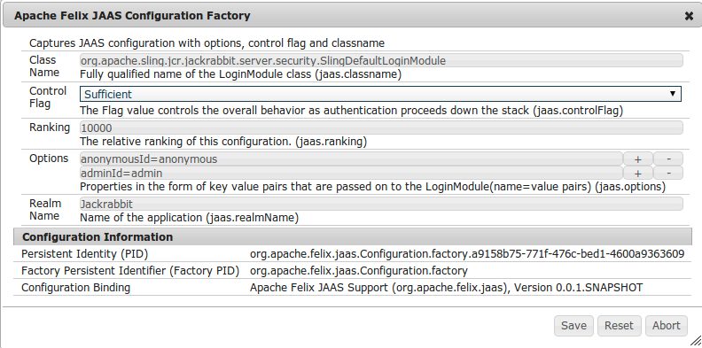

Apache Felix JAAS Support
Apache Felix JAAS support aims to simplify usage of JAAS in OSGi.
It supports following features
- It can work both in Standalone and AppServer deployments i.e. in those environment where global JAAS configuration might be used by other applications and our usage of JAAS should not affect them
- It enables usage of OSGi Configuration support to dynamically configure the login modules.
- It allows LoginModule instances to be created via factories registered in OSGi Service Registry
- It does not require the client to depend on any OSGi API
- It works well with the dynamic nature of the OSGi env
- Implementation depends only on Core OSGi API and ConfigAdmin (RFC 104)
The Problem
The basic problem when using JAAS in OSGi is that it creates the LoginModule instance using reflection. This poses problem in OSGi env as the client bundle does not have the visibility of all the required LoginModule classes.
A typical use of JAAS login looks like below
// let the LoginContext instantiate a new Subject LoginContext lc = new LoginContext("myApp"); lc.login();
In this mode the LoginContext would access the global JAAS Configuration internally via Configuration.getConfiguration(). It would then instantiate the LoginModule instance based on the configuration value. It uses the Thread Context ClassLoader (TCCL) to create the instance. This approach fails to work when used in OSGi
- The Thread Context ClassLoader is not defined in general in an OSGi context. It can and has to be set by the caller and OSGi cannot generally enforce that.
- Instantiating a LoginModule generally requires access to internal implementation classes, by exporting these classes an implementing bundle would break its encapsulation.
- Even if an implementation class was exported, importing this class in a consumer bundle would bind it to the specific implementation package provided, which violates the principle of loose coupling.
Making it work
In order to make JAAS work under OSGi following
Usage
The JAAS support involves following parts
- LoginContext Creation - Refers to the client code which constructs the LoginContext and then perform login operation
- LoginModule Registration - Mechanism by which LoginModule is registered with a given
realm.
LoginModule registration
The login modules can be registered via two mechanism
- OSGi Configuration
- LoginModuleFactory registered with the OSGi ServiceRegistry
A - OSGi Configuration
LoginModules can also be configured via configuration which is somewhat similar to the file based configuration. It consist of two parts
- Information around which bundle provides a specific LoginModule module
- Configuration required to be passed to that LoginModule
Manifest Header Entry
Any bundle which provides a LoginModule class needs to provide this information via Jaas-ModuleClass manifest header.
<Jaas-ModuleClass>org.apache.felix.example.jaas.config.internal.SampleConfigLoginModule</Jaas-ModuleClass>
Configuration
JAAS module depends on OSGi Configuration for managing the LoginModule configuration. The configuration factory PID is org.apache.felix.jaas.Configuration.factory.It provides the required metatype descriptor thus enabling configuration via via "Configuration" tab of Felix WebConsole

Configuration properties
jaas.classname- Fully qualified name of the LoginModule classjaas.controlFlag- LoginControlFlag to use like required, optional, requisite, sufficient. Default is set to requiredjaas.realmName- JAAS Realm name. If specified then LoginModule would be registered against given realm otherwise it is bound to a 'other' realmjaas.ranking- Ranking for the LoginModule. It would be used to order the various login modules
For an example refer to Sample Confiuration. It configures a SampleConfigLoginModule for sample realm
B - LoginModuleFactory
Any bundle which want to provide a LoginModule implementation would need to provide a factory service which implements the LoginModuleFactory interface. The factory needs to be registeredwith following optional properties
jaas.controlFlag- LoginControlFlag to use like required, optional, requisite, sufficient. Default is set to requiredjaas.realmName- JAAS Realm name. If specified then LoginModule would be registered against given realm otherwise it is bound to a 'other' realm.service.ranking- Ranking for the LoginModule. It would be used to order the various login modules.
Interface
/** * A factory for creating {@link LoginModule} instances. */ public interface LoginModuleFactory { /** * Property name specifying whether or not a <code>LoginModule</code> is * REQUIRED, REQUISITE, SUFFICIENT or OPTIONAL. Refer to {@link javax.security.auth.login.Configuration} * for more details around the meaning of these flags * * By default the value is set to REQUIRED */ String JAAS_CONTROL_FLAG = "jaas.controlFlag"; /** * Property name specifying the Realm name (or application name) against which the * LoginModule would be registered. * * <p>If no realm name is provided then LoginModule would registered with a default realm * as configured */ String JAAS_REALM_NAME = "jaas.realmName"; /** * Creates the LoginModule instance * @return loginModule instance */ LoginModule createLoginModule(); }
Refer to JdbcLoginModuleFactory for one example of its usage. It constructs a JdbcLoginModule based on the configuration and passes on the datasource.